String底层总结 1.字符串创建方式
字符串有六种基本的创建方式
使用char[]数组配合new来创建
使用byte[]数组配合new来创建
使用int[]数组配合new来创建
使用 已有字符串 配合new来创建
使用字面量创建（不使用new）
合二为一，使用+运算符来拼接创建
可以看到，至少从表面上讲，后两种都没有用到 new 关键字
1.1 char[] 数组创建
这种是最基本的，因为字符串本身就是将字符串起来
String底层结构就是多个字符的 char[] 数组
1 String s = new String(new char []{'a' , 'b' , 'c' });
它的内部结构如下（1.8）
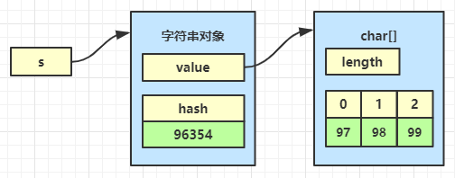
其中 97 其实就是 ‘a’ ，98 其实就是 ‘b’ ，99 其实就是 ‘c’
1.2 byte[] 数组创建
什么时候会根据 byte[] 数组来创建字符串呢【从 byte[] 转为字符串的需求】
从网络（例如一个浏览器的 http 请求）传递过来的字节数据
从 I/O（例如从一个文本文件）读取到的数据
例如
1 String s = new String(new byte []{97 , 98 , 99 });
其中 new byte[]{97, 98, 99} 就可以是
从网络（例如一个浏览器的 http 请求）传递过来的字节数据
从 I/O（例如从一个文本文件）读取到的数据
它的内部结构其实也是
这时 byte[] 会在构造时被转换为 char[]，其中 byte[] 和 char [] 的结构如下
看到上幅图有同学会说，对于 byte[] 转换为 char[]，97 还是对应 97，98 还是对应 98，99 还是对应 99 啊，看不出 byte[] 和 char[] 的任何区别啊？你要知道，首先他们的大小不一样，其次上面的 char[] 中的 97（a），98（b），99（c） 都属于拉丁字符集，如果用到其它字符集，那么结果就不一样了，看下面的例子
按 gbk 字符集转换
1 2 3 byte [] bytes = {(byte ) 0xD5 , (byte ) 0xC5 };String str = new String(bytes, Charset.forName("gbk" )); System.out.println(str);
这时
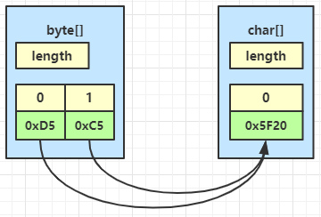
1 2 3 4 byte [] bytes = {(byte ) 0xE5 , (byte ) 0xBC , (byte ) 0xA0 }; String str = new String(bytes, Charset.forName("utf-8" )); System.out.println(str);
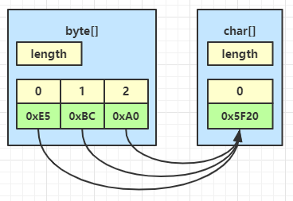
其中三个byte 0xE5，0xBC 和0xA0 被转换成了一个char 0x5F20（汉字【张】）
其实 java 中的 char 字符都是以 unicode 编码的，从外界不同的编码（如 gbk，utf-8）传过来的 byte[] 最终到 java 中的 char 都统一了
1.3 int[] 数组创建 有时候我们还需要用两个 char 表示一个字符，比如 😂 这个笑哭的字符，它用 unicode 编码表示为 0x1F602，存储范围已经超过了 char 能表示的最大值 0xFFFF，因此需要使用 int[] 来构造这样的字符串，如下
1 String s = new String(new int []{0x1F602 }, 0 , 1 );
转换过程如图所示
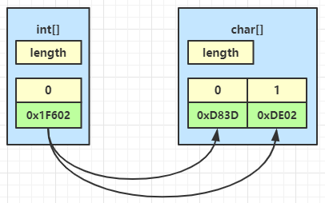
参考
unicode 9.0 说明
unicode 中的 emoji 表情
1.4 从已有字符串创建 直接看源码
1 2 3 4 public String (String original) this .value = original.value; this .hash = original.hash; }
这种最为简单，但要注意是两个字符串对象引用同一个 char[] 对象 ，但是引用值不相等
1 2 String s1 = new String(new char []{'a' , 'b' , 'c' }); String s2 = new String(s1);
内存结构如下
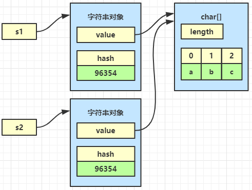
1.5 字面量创建 以上四种创建方式，大家用的实际上相对少一点，最熟悉的是这种字面量的方式：
1 2 3 public static void main (String[] args) String s = "abc" ; }
"abc" 被叫做字符串字面量
1.5.1非对象 严格地说，字面量在代码运行到它所在语句之前，它还不是字符串对象
要理解从字面量变成字符串对象的过程，需要从字节码的角度来分析
在上面的 java 代码被编译为 class 文件后，"abc" 存储于【类文件常量池】中
1 2 3 4 Constant pool: // 常量池 #1 = Methodref #19.#41 // java/lang/Object."<init>":()V #2 = String #42 // abc ...
当 class 完成类加载之后，"abc" 这个字面量被存储于【运行时常量池】（归属于方法区）中，其中 #1 #2 都会被翻译为运行时真正的内存地址
再看一下 class 中 main 方法的字节码
1 2 3 4 5 6 7 8 9 public static void main(java.lang.String[]); // 字节码指令 descriptor: ([Ljava/lang/String;)V flags: ACC_PUBLIC, ACC_STATIC Code: stack=1, locals=2, args_size=1 0: ldc #2 // String abc 2: astore_1 3: return ...
将来 main 方法被调用时，就会执行里面的字节码指令
1 2 3 0: ldc #2 // String abc 2: astore_1 3: return
ldc #2 就是到运行时常量池中找到 #2 的内存地址，找到 "abc" 这个字面量，再根据它创建一个 String 对象。
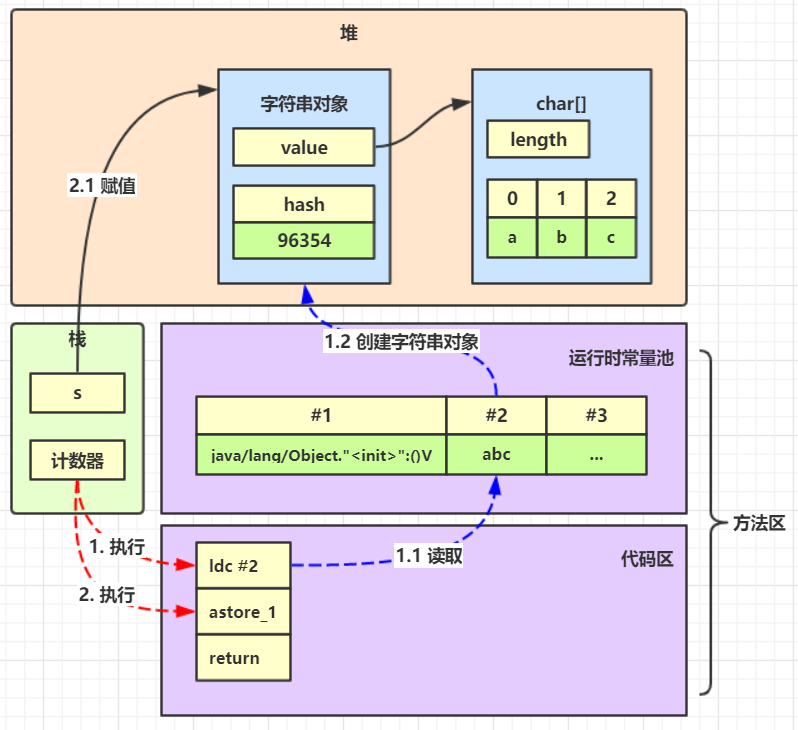
1.5.2懒加载
例如有如下代码
1 2 3 4 System.out.println(); System.out.println("1" ); System.out.println("2" ); System.out.println("3" );
可以给每行语句加上断点，然后用 idea 的 debug 界面中的 memory 工具来查看字符串对象的数量
刚开始在断点1 处，其它类中创建的字符串对象有 2411 个
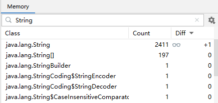
执行到断点2 处，这时新创建了 "1" 对应的字符串对象，个数为 2412
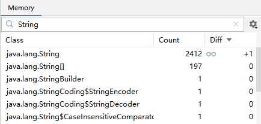
执行到断点3 处，这时新创建了 "2" 对应的字符串对象，个数为 2413
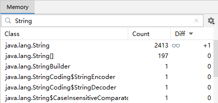
1.5.3不重复 同一个类中的值相同字面量，其实只有一份
1 2 3 4 5 6 public class TestString1 public static void main (String[] args) String s1 = "abc" ; String s2 = "abc" ; } }
常量池为
1 2 3 4 Constant pool: #1 = Methodref #25.#48 // java/lang/Object."<init>":()V #2 = String #49 // abc ...
对应的字节码为
1 2 3 4 5 6 7 8 9 10 11 public static void main(java.lang.String[]); descriptor: ([Ljava/lang/String;)V flags: ACC_PUBLIC, ACC_STATIC Code: stack=1, locals=3, args_size=1 0: ldc #2 // String abc 2: astore_1 3: ldc #2 // String abc 5: astore_2 6: return ...
可以看到 "abc" 这个字面量虽然出现了 2 次，但实际上都是对应着常量池中 #2 这个地址
如果是不同类中的 "abc" 呢？【类文件常量池】包括【运行时常量池】都是以类为单位的
例如，另一个类中
1 2 3 4 5 6 public class TestString2 public static void main (String[] args) String s1 = "a" ; String s2 = "abc" ; } }
对应的常量池
1 2 3 4 Constant pool: #1 = Methodref #5.#22 // java/lang/Object."<init>":()V #2 = String #23 // a #3 = String #24 // abc
可以看到在这个类中，"abc" 对应的常量池的编号是 #3，与 TestString1 中的已经不同
这时候【字面量】是两份，而【字符串对象】会有几个呢？
我们来做个实验，把刚才的代码做个改写
1 2 3 4 5 6 7 8 9 10 11 12 13 14 15 16 public class TestString1 public static void main (String[] args) String s1 = "abc" ; String s2 = "abc" ; TestString2.main(new String[]{s1, s2}); } } public class TestString2 public static void main (String[] args) String s1 = "a" ; String s2 = "abc" ; System.out.println(args[0 ] == s2); System.out.println(args[1 ] == s2); } }
运行结果
具体原理我们下一个章节再讲
1.5 拼接创建 最后还可以通过 + 运算符将两个字符串（其中一个也可以是其它类型）拼接为一个新字符串，例如
例1
例2
1 2 final String x = "b" ;String s = "a" + x;
例3
1 2 String x = "b" ; String s = "a" + x;
例4
有同学会问，例1与例2与例3 不同吗？还别说，真就不同，其中例1 与例2 原理是一样的，例3 与例4 原理是一样的，反编译一下
例1
常量池
1 2 3 4 Constant pool: #1 = Methodref #4.#20 // java/lang/Object."<init>":()V #2 = String #21 // ab ...
主方法
1 2 3 4 5 6 7 8 9 public static void main(java.lang.String[]); descriptor: ([Ljava/lang/String;)V flags: ACC_PUBLIC, ACC_STATIC Code: stack=1, locals=2, args_size=1 0: ldc #2 // String ab 2: astore_1 3: return ...
可以看到，其实并没有真正的【拼接】操作发生，从源码编译为字节码时，javac 就已经把 “a” 和 “b” 串在一起了，这是一种编译期的优化处理
例2
1 2 final String x = "b" ;String s = "a" + x;
常量池
1 2 3 4 5 Constant pool: #1 = Methodref #5.#22 // java/lang/Object."<init>":()V #2 = String #23 // b #3 = String #24 // ab ...
主方法
1 2 3 4 5 6 7 8 9 10 11 public static void main(java.lang.String[]); descriptor: ([Ljava/lang/String;)V flags: ACC_PUBLIC, ACC_STATIC Code: stack=1, locals=3, args_size=1 0: ldc #2 // String b final b 2: astore_1 3: ldc #3 // String ab 5: astore_2 6: return ...
可以看到，还是没有真正的【拼接】操作发生，final 意味着 x 的值不可改变，因此其它引用 x 的地方都可以安全地被替换为 “b”，而不用担心 x 被改变，从源码编译为字节码时，javac 就也进行了优化，把所有出现 x 的地方都替换成为了 “b”
那么，什么是真正的【拼接】操作呢？看一下例3 反编译后的结果
1 2 String x = "b" ; String s = "a" + x;
常量池
1 2 3 4 5 6 7 Constant pool: #1 = Methodref #9.#26 // java/lang/Object."<init>":()V #2 = String #27 // b #3 = Class #28 // java/lang/StringBuilder #4 = Methodref #3.#26 // java/lang/StringBuilder."<init>":()V #5 = String #29 // a ...
可以看到常量池中并没有 ab 字面量
主方法
1 2 3 4 5 6 7 8 9 10 11 12 13 14 15 16 17 public static void main(java.lang.String[]); descriptor: ([Ljava/lang/String;)V flags: ACC_PUBLIC, ACC_STATIC Code: stack=2, locals=3, args_size=1 0: ldc #2 // String b 2: astore_1 3: new #3 // class java/lang/StringBuilder 6: dup 7: invokespecial #4 // Method java/lang/StringBuilder."<init>":()V 10: ldc #5 // String a 12: invokevirtual #6 // Method java/lang/StringBuilder.append:(Ljava/lang/String;)Ljava/lang/StringBuilder; 15: aload_1 16: invokevirtual #6 // Method java/lang/StringBuilder.append:(Ljava/lang/String;)Ljava/lang/StringBuilder; 19: invokevirtual #7 // Method java/lang/StringBuilder.toString:()Ljava/lang/String; 22: astore_2 23: return
翻译成人能读懂的就是
1 2 3 4 5 String x = "b" ; String s = "a" + x; String x = "b" ; String s = new StringBuilder().append("a" ).append(x).toString();
StringBuilder 的 toString() 方法又是怎么实现的呢？
1 2 3 4 5 6 7 8 9 10 11 12 13 public final class StringBuilder extends AbstractStringBuilder implements java .io .Serializable , CharSequence { char [] value; @Override public String toString () return new String(value, 0 , count); } }
可以看到，本质上就是根据 StringBuilder 维护的 char[] 创建了新的 String 对象
1.6 JDK 9 之后的改变 前面我们讲的是 JDK 8 中的字符串，但从 JDK 9 开始，String 的内部存储方式、以及拼接方式又发生了较大的改变
不再用 char[] 存储字符，改为了 byte[]，目的是更节约内存
使用 invokedynamic 指令扩展了字符串的拼接的实现方式
1.6.1内存结构改变 例如，字符串中仅有拉丁字符
1 String s = new String(new byte []{97 , 98 , 99 });
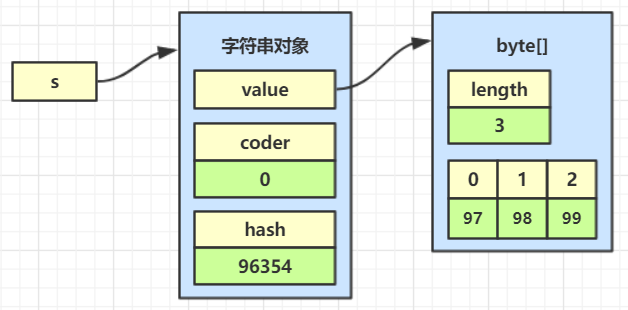
例如，字符串中有中文字符
1 2 3 4 String s = new String( new byte []{(byte ) 0xd5 , (byte ) 0xc5 }, Charset.forName("gbk" ) );
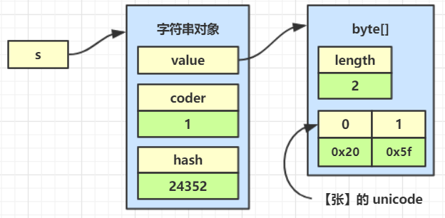
例如，既有中文字符也有拉丁字符
1 2 3 4 String s = new String( new byte []{(byte ) 0xd5 , (byte ) 0xc5 , 97 }, Charset.forName("gbk" ) );
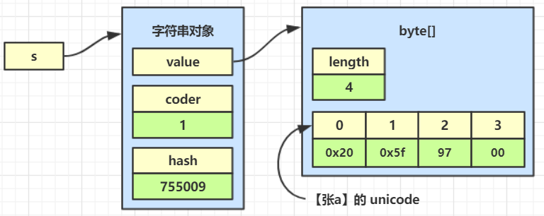
1.6.2拼接方式改变 例如
1 2 3 4 public static void main (String[] args) String x = "b" ; String s = "a" + x; }
常量池
1 2 3 4 Constant pool: #1 = Methodref #5.#22 // java/lang/Object."<init>":()V #2 = String #23 // b ...
主方法
1 2 3 4 5 6 7 8 9 10 11 12 public static void main(java.lang.String[]); descriptor: ([Ljava/lang/String;)V flags: ACC_PUBLIC, ACC_STATIC Code: stack=1, locals=3, args_size=1 0: ldc #2 // String b 2: astore_1 3: aload_1 4: invokedynamic #3, 0 // InvokeDynamic #0:makeConcatWithConstants:(Ljava/lang/String;)Ljava/lang/String; 9: astore_2 10: return ...
直接跟 invokedynamic 对应的字节码比较难，我直接翻译成人能看懂的代码
1 2 3 4 5 6 7 8 9 10 11 12 13 14 15 16 17 18 19 20 public static void main (String[] args) throws Throwable String x = "b" ; MethodHandles.Lookup lookup = MethodHandles.lookup(); CallSite callSite = StringConcatFactory.makeConcatWithConstants( lookup, "arbitrary" , MethodType.methodType(String.class , String .class ), // 具体处方格式，其中 \1 意思是变量的占位符，将来被 x 代替 "a\1" ); String s = (String) callSite.getTarget().invoke(x); }
为什么搞这么麻烦！！！ 主要是为了对字符串的拼接做各种扩展优化，多了扩展途径。其中最为重要的是 MethodHandle ，它使用了策略模式 生成，JDK 提供的所有的策略可以在 StringConcatFactory.Strategy 中找到：
策略名
内部调用
解释
BC_SB
字节码拼接生成 StringBuilder 代码
等价于 new StringBuilder()
BC_SB_SIZED
字节码拼接生成 StringBuilder 代码
等价于 new StringBuilder(n) n为预估大小
BC_SB_SIZED_EXACT
字节码拼接生成 StringBuilder 代码
等价于 new StringBuilder(n) n为准确大小
MH_SB_SIZED
MethodHandle 生成 StringBuilder 代码
等价于 new StringBuilder(n) n为预估大小
MH_SB_SIZED_EXACT
MethodHandle 生成 StringBuilder 代码
等价于 new StringBuilder(n) n为准确大小
MH_INLINE_SIZED_EXACT
MethodHandle 内部使用字节数组直接构造出 String
默认策略
如果想改变策略，可以在运行时添加 JVM 参数，例如将策略改为 BC_SB
1 2 3 -Djava.lang.invoke.stringConcat=BC_SB -Djava.lang.invoke.stringConcat.debug=true -Djava.lang.invoke.stringConcat.dumpClasses=匿名类导出路径
还有一种选择，是在 javac 编译时仍使用JDK1.5StringBuilder的办法拼接字符串，而不是采用 invokedynamic，就是在 javac 时加上参数
1.6.3默认拼接策略 默认策略为 MH_INLINE_SIZED_EXACT，使用字节数组直接构造出 String
例如有下面的字符串拼接代码
1 2 String x = "b" ; String s = "a" + x + "c" + "d" ;
使用了 MH_INLINE_SIZED_EXACT 策略后，内部会执行如下等价调用
1 2 3 4 5 6 7 8 9 10 11 12 13 14 15 16 17 18 String x = "b" ; byte [] buf = new byte [4 ];String s = StringConcatHelper.newString(buf, 0 ); StringConcatHelper.prepend(1 , buf, "a" ); StringConcatHelper.prepend(2 , buf, x); StringConcatHelper.prepend(4 , buf, "cd" );
注意
StringConcatHelper 对外是不可见的，因此无法直接测试，只能反射测试
prepend 可以直接修改字符串中的 bytes 属性值，他们都是 java.lang 包下的
1.6.4模仿 BC_SB 策略 接下来我模拟其中一种策略的实现过程：以字节码指令生成拼接方法为例
先说明一下我的目的
1 2 3 String x = "hello," ; String y = "world" ; String s = x + y;
其中 + 可以被 invokedynamic 优化为多种实现策略，如果让我自己来实现，我仅会用 StringBuilder 来拼接，因此我希望 x+y 能够被翻译为对下面方法的调用
1 2 3 public static String concat (String x, String y) return new StringBuilder().append(x).append(y).toString(); }
1. 方法手动生成 提供一个拼接方法
1 2 3 public static String concat (String x, String y) return new StringBuilder().append(x).append(y).toString(); }
用 MethodHandle 反射调用
1 2 3 4 5 6 7 8 9 String x = "hello," ; String y = "world" ; MethodHandle mh = MethodHandles.lookup().findStatic( TestString4.class , "concat", MethodType.methodType(String.class , String .class , String .class ) ) ;String s = (String) mh.invoke(x,y); System.out.println(s);
输出
但这样需要自己提供 concat 方法，而且其参数个数都固定死了，能否动态生成这么一个方法呢，答案是肯定的，为了简化生成逻辑，这里我仍然以固定参数为例
2. 字节码生成方法 Unsafe 对象访问类
1 2 3 4 5 6 7 8 9 10 11 12 public class UnsafeAccessor static Unsafe UNSAFE; static { try { Field theUnsafe = Unsafe.class.getDeclaredField("theUnsafe"); theUnsafe.setAccessible(true ); UNSAFE = (Unsafe) theUnsafe.get(null ); } catch (NoSuchFieldException | IllegalAccessException e) { e.printStackTrace(); } } }
可以使用 asm 生成匿名类字节码
1 2 3 4 5 6 7 8 9 10 11 12 13 14 15 16 17 18 19 20 21 22 23 24 25 26 27 28 29 30 31 32 33 34 35 36 37 38 39 40 41 42 43 44 45 46 47 48 49 50 51 52 public static byte [] dump() { ClassWriter cw = new ClassWriter(0 ); FieldVisitor fv; MethodVisitor mv; AnnotationVisitor av0; cw.visit(52 , ACC_PUBLIC + ACC_SUPER, "cn/itcast/string/TestString4" , null , "java/lang/Object" , null ); cw.visitSource("TestString4.java" , null ); { mv = cw.visitMethod(ACC_PUBLIC, "<init>" , "()V" , null , null ); mv.visitCode(); Label l0 = new Label(); mv.visitLabel(l0); mv.visitLineNumber(3 , l0); mv.visitVarInsn(ALOAD, 0 ); mv.visitMethodInsn(INVOKESPECIAL, "java/lang/Object" , "<init>" , "()V" , false ); mv.visitInsn(RETURN); Label l1 = new Label(); mv.visitLabel(l1); mv.visitLocalVariable("this" , "Lcn/itcast/string/TestString4;" , null , l0, l1, 0 ); mv.visitMaxs(1 , 1 ); mv.visitEnd(); } { mv = cw.visitMethod(ACC_PUBLIC + ACC_STATIC, "concat" , "(Ljava/lang/String;Ljava/lang/String;)Ljava/lang/String;" , null , null ); mv.visitCode(); Label l0 = new Label(); mv.visitLabel(l0); mv.visitLineNumber(9 , l0); mv.visitTypeInsn(NEW, "java/lang/StringBuilder" ); mv.visitInsn(DUP); mv.visitMethodInsn(INVOKESPECIAL, "java/lang/StringBuilder" , "<init>" , "()V" , false ); mv.visitVarInsn(ALOAD, 0 ); mv.visitMethodInsn(INVOKEVIRTUAL, "java/lang/StringBuilder" , "append" , "(Ljava/lang/String;)Ljava/lang/StringBuilder;" , false ); mv.visitVarInsn(ALOAD, 1 ); mv.visitMethodInsn(INVOKEVIRTUAL, "java/lang/StringBuilder" , "append" , "(Ljava/lang/String;)Ljava/lang/StringBuilder;" , false ); mv.visitMethodInsn(INVOKEVIRTUAL, "java/lang/StringBuilder" , "toString" , "()Ljava/lang/String;" , false ); mv.visitInsn(ARETURN); Label l1 = new Label(); mv.visitLabel(l1); mv.visitLocalVariable("x" , "Ljava/lang/String;" , null , l0, l1, 0 ); mv.visitLocalVariable("y" , "Ljava/lang/String;" , null , l0, l1, 1 ); mv.visitMaxs(2 , 2 ); mv.visitEnd(); } cw.visitEnd(); return cw.toByteArray(); }
这么多字节码主要目的仅仅是生成一个匿名类的字节码，其中包括了拼接方法
1 2 3 public static String concat (String x, String y) return new StringBuilder().append(x).append(y).toString(); }
接下来就可以生成匿名类，供 MethodHandler 反射调用
1 2 3 4 5 6 7 8 9 10 11 12 13 byte [] bytes = dump();Class<?> innerClass = UnsafeAccessor.UNSAFE .defineAnonymousClass(TestString4.class , bytes , null ) ; UnsafeAccessor.UNSAFE.ensureClassInitialized(innerClass); MethodHandle mh = MethodHandles.lookup().findStatic( innerClass, "concat" , MethodType.methodType(String.class , String .class , String .class ) ) ;
最终就可以使用该 MethodHandle 反射完成字符串拼接了
1 2 3 String x = "hello," ; String y = "world" ; String s = (String) mh.invoke(x, y);
输出
JDK 9 当然做的更为专业，可以适配生成不同的参数个数、类型的 MethodHandle，但原理就是这样。
2.字符串之家 - StringTable 2.1 家养与野生 其实字符串分为家养的和野生的。
前面我们讲解了 String 的六种创建方式，除了字面量方式创建的字符串是家养的以外，其它方法创建的字符串都是野生的。 什么意思呢？
如何保证家养的字符串对象不重复呢？JDK 使用了 StringTable 来解决，StringTable 是采用 c++ 代码编写的，数据结构上就是一个 hash 表 ，字符串对象就充当 hash 表中的 key，key 的不重复性，是 hash 表的基本特性
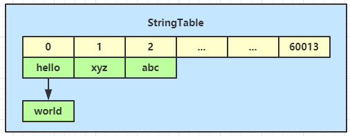
当代码运行到一个字面量 “abc” 时，会首先检查 StringTable 中有没有相同的 key，如果没有，创建新字符串对象加入；否则直接返回已有的字符串对象
2.2 收留野生字符串 野生的字符串也有机会得到教育
字符串提供了 intern 方法来实现去重，让字符串对象有机会受到 StringTable 的管理
1 public native String intern ()
它会尝试将调用者放入 StringTable
2.2.1如果 StringTable 中已有 1 2 String x = ...; String s = x.intern();
总会返回家养的 String 对象
1 2 3 4 5 6 7 8 sequenceDiagram participant x as x participant s as s participant st as StringTable x ->> st : intern() st ->> st : 如果已有 st -->> s : 返回 StringTable 对象
例子
1 2 3 4 5 String x = new String(new char []{'a' , 'b' , 'c' }); String y = "abc" ; String z = x.intern(); System.out.println(z == y); System.out.println(z == x);
输出
2.2.2如果 StringTable 中没有（1.7 以上 JDK 的做法） 1 2 String x = ...; String s = x.intern();
1 2 3 4 5 6 7 8 9 sequenceDiagram participant x as x participant s as s participant st as StringTable x ->> st : intern() st ->> st : 如果没有 st ->> st : 将x引用的对象加入 st -->> s : 返回 StringTable 对象
例子
1 2 3 4 5 String x = new String(new char []{'a' , 'b' , 'c' }); String z = x.intern(); String y = "abc" ; System.out.println(z == x); System.out.println(z == y);
输出
2.2.3如果 StringTable 中没有（1.6 JDK 的做法） 1 2 String x = ...; String s = x.intern();
1 2 3 4 5 6 7 8 9 10 sequenceDiagram participant x as x participant s as s participant st as StringTable x ->> st : intern() st ->> st : 如果没有 st ->> st : 将x引用的对象复制 st ->> st : 将复制后的对象加入 st -->> s : 返回 StringTable 对象
例子，代码同上面 1.7 相同
1 2 3 4 5 String x = new String(new char []{'a' , 'b' , 'c' }); String z = x.intern(); String y = "abc" ; System.out.println(z == x); System.out.println(z == y);
输出
2.3 去重的好处 1 2 3 4 5 6 7 8 9 10 11 12 13 14 15 16 17 18 19 20 21 22 23 24 public class Demo1 public static void main (String[] args) throws IOException List<String> address = new ArrayList<>(); System.in.read(); for (int i = 0 ; i < 10 ; i++) { try (BufferedReader reader = new BufferedReader(new InputStreamReader(new FileInputStream("linux.words" ), "utf-8" ))) { String line = null ; long start = System.nanoTime(); while (true ) { line = reader.readLine(); if (line == null ) { break ; } address.add(line.intern()); } System.out.println("cost:" +(System.nanoTime()-start)/1000000 ); } } System.in.read(); } }
2.4 家的位置 StringTable 的位置（1.6）
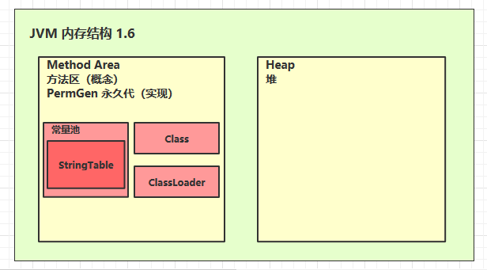
StringTable 的位置（1.8）

如何证明
1.6 不断将字符串用 intern 加入 StringTable，最后撑爆的是永久代内存，为了让错误快速出现，将永久代内存设置的小一些：-XX:MaxPermSize=10m，最终会出现 java.lang.OutOfMemoryError: PermGen space
1.8 不断将字符串用 intern 加入 StringTable，最后撑爆的是堆内存，为了让错误快速出现，将堆内存设置的小一些：-Xmx10m -XX:-UseGCOverheadLimit 后一个虚拟机参数是避免 GC 频繁引起其他错误而不是我们期望的 java.lang.OutOfMemoryError: Java heap space
代码
1 2 3 4 5 6 7 8 9 10 11 12 13 14 15 16 17 18 19 20 21 22 public class Demo2 public static void main (String[] args) throws InterruptedException List<String> list = new ArrayList<String>(); int i = 0 ; try { for (int j = 0 ; j < 260000 ; j++) { list.add(String.valueOf(j).intern()); i++; } } catch (Throwable e) { e.printStackTrace(); } finally { System.out.println(i); } } }
2.5 intern 去重原理 查阅一下 jdk 的源码
http://hg.openjdk.java.net/jdk8u/jdk8u/hotspot/file/5bd0e0bcb152/src/share/vm/classfile/symbolTable.cpp
1 2 3 4 5 6 7 8 9 10 11 12 13 14 15 16 17 18 19 20 21 22 23 24 25 26 27 28 29 30 31 32 33 34 35 36 37 38 39 40 41 42 43 44 45 46 47 48 49 50 51 52 53 54 55 oop StringTable::intern(Handle string_or_null, jchar* name, int len, TRAPS) { unsigned int hashValue = hash_string(name, len); int index = the_table()->hash_to_index(hashValue); oop found_string = the_table()->lookup(index, name, len, hashValue); if (found_string != NULL ) { ensure_string_alive(found_string); return found_string; } debug_only(StableMemoryChecker smc(name, len * sizeof (name[0 ]))); assert(!Universe::heap()->is_in_reserved(name), "proposed name of symbol must be stable" ); Handle string ; if (!string_or_null.is_null()) { string = string_or_null; } else { string = java_lang_String::create_from_unicode(name, len, CHECK_NULL); } #if INCLUDE_ALL_GCS if (G1StringDedup::is_enabled()) { G1StringDedup::deduplicate(string ()); } #endif oop added_or_found; { MutexLocker ml (StringTable_lock, THREAD) ; added_or_found = the_table()->basic_add(index, string , name, len, hashValue, CHECK_NULL); } ensure_string_alive(added_or_found); return added_or_found; }
其中 lookup 的定义为
1 2 3 4 5 6 7 8 9 10 11 12 13 14 15 16 17 18 19 20 21 oop StringTable::lookup(int index, jchar* name, int len, unsigned int hash) { int count = 0 ; for (HashtableEntry<oop, mtSymbol>* l = bucket(index); l != NULL ; l = l->next()) { count++; if (l->hash() == hash) { if (java_lang_String::equals(l->literal(), name, len)) { return l->literal(); } } } if (count >= rehash_count && !needs_rehashing()) { _needs_rehashing = check_rehash_table(count); } return NULL ; }
其中 basic_add 的定义为
1 2 3 4 5 6 7 8 9 10 11 12 13 14 15 16 17 18 19 20 21 22 23 24 25 26 27 28 29 30 31 32 33 34 35 36 37 38 39 40 oop StringTable::basic_add(int index_arg, Handle string , jchar* name, int len, unsigned int hashValue_arg, TRAPS) { assert(java_lang_String::equals(string (), name, len), "string must be properly initialized" ); No_Safepoint_Verifier nsv; unsigned int hashValue; int index; if (use_alternate_hashcode()) { hashValue = hash_string(name, len); index = hash_to_index(hashValue); } else { hashValue = hashValue_arg; index = index_arg; } oop test = lookup(index, name, len, hashValue); if (test != NULL ) { return test; } HashtableEntry<oop, mtSymbol>* entry = new_entry(hashValue, string ()); add_entry(index, entry); return string (); }
2.6 G1 去重 懒惰是程序员的一大美德，不追求懒惰的程序员不是好程序员
如果你使用的 JDK 8u20，那么可以使用下面的 JVM 参数开启 G1 垃圾回收器，并开启字符串去重功能
1 -XX:+UseG1GC -XX:+UseStringDeduplication
原理是让多个字符串对象引用同一个 char[] 来达到节省内存的目的
特点
由 G1 垃圾回收器在 minor gc 阶段自动分析优化，不需要程序员自己干预
只有针对那些多次回收还不死的字符串对象，才会进行去重优化，可以通过 -XX:StringDeduplicationAgeThreshold=n 来调整
可以通过 -XX:+PrintStringDeduplicationStatistics 查看 G1 去重的统计信息
与调用 intern 去重相比，G1 去重好处在于自动，但缺点是即使 char[] 不重复，但字符串对象本身还要占用一定内存（对象头、value引用、hash），intern 去重是字符串对象只存一份，更省内存
2.7 家的大小 StringTable 足够大，才能发挥性能优势，大意味着 String 在 hash 表中冲突减少，链表短，性能高。
可以通过 -XX:+PrintStringTableStatistics 来查看 StringTable 的大小，JDK 8 中它的默认大小为 60013
要注意 StringTable 底层的 hash 表在 JVM 启动后大小就固定不变了
这个 hash 表可以在链表长度太长时进行 rehash，但不是利用扩容实现的 rehash，而是通过重新计算字符串的 hash 值来让它们分布均匀
如果想在启动前调整 StringTable 的大小，可以通过 -XX:StringTableSize=n 来指定
代码
1 2 3 4 5 6 7 8 9 10 11 12 13 14 15 16 17 18 19 20 21 public class Demo3 public static void main (String[] args) throws IOException try (BufferedReader reader = new BufferedReader(new InputStreamReader(new FileInputStream("linux.words" ), "utf-8" ))) { String line = null ; long start = System.nanoTime(); while (true ) { line = reader.readLine(); if (line == null ) { break ; } line.intern(); } System.out.println("cost:" + (System.nanoTime() - start) / 1000000 ); } } }
2.8 字符串之死 字符串也是一个对象，只要是对象，终究逃不过死亡的命运。字符串对象与其它 Java 对象一样，只要失去了利用价值，就会被垃圾回收，无论是野生字符串，还是家养字符串
怎么证明家养的字符串也能被垃圾回收呢，可以用以下 JVM 参数来查看
1 -XX:+PrintStringTableStatistics -XX:+PrintGCDetails -verbose:gc
代码
1 2 3 4 5 6 7 8 9 10 11 12 13 14 15 16 17 18 19 20 public class Demo4 public static void main (String[] args) throws InterruptedException int i = 0 ; try { for (int j = 0 ; j < 100000 ; j++) { String.valueOf(j).intern(); i++; } } catch (Throwable e) { e.printStackTrace(); } finally { System.out.println(i); } } }
三、面试题讲解 1. 判断输出
1 2 3 4 5 6 String str1 = "string" ; String str2 = new String("string" ); String str3 = str2.intern(); System.out.println(str1==str2); System.out.println(str1==str3);
2. 判断输出
1 2 3 4 5 6 7 8 9 10 11 12 13 String baseStr = "baseStr" ; final String baseFinalStr = "baseStr" ;String str1 = "baseStr01" ; String str2 = "baseStr" +"01" ; String str3 = baseStr + "01" ; String str4 = baseFinalStr+"01" ; String str5 = new String("baseStr01" ).intern(); System.out.println(str1 == str2); System.out.println(str1 == str3); System.out.println(str1 == str4); System.out.println(str1 == str5);
3. 判断输出（注意版本）
1 2 3 4 String str2 = new String("str" )+new String("01" ); str2.intern(); String str1 = "str01" ; System.out.println(str2==str1);
4. 判断输出
1 2 3 4 String str1 = "str01" ; String str2 = new String("str" )+new String("01" ); str2.intern(); System.out.println(str2 == str1);
5. String s = new String(“xyz”)，创建了几个String Object?
6. 判断输出
1 2 3 String s1 = "abc" ; String s2 = "abc" ; System.out.println(s1 == s2);
7. 判断输出
1 2 3 String s1 = new String("abc" ); String s2 = new String("abc" ); System.out.println(s1 == s2);
8. 判断输出
1 2 3 4 5 String s1 = "abc" ; String s2 = "a" ; String s3 = "bc" ; String s4 = s2 + s3; System.out.println(s1 == s4);
9. 判断输出
1 2 3 4 5 String s1 = "abc" ; final String s2 = "a" ;final String s3 = "bc" ;String s4 = s2 + s3; System.out.println(s1 == s4);
10. 判断输出
1 2 3 4 5 6 String s = new String("abc" ); String s1 = "abc" ; String s2 = new String("abc" ); System.out.println(s == s1.intern()); System.out.println(s == s2.intern()); System.out.println(s1 == s2.intern());